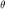
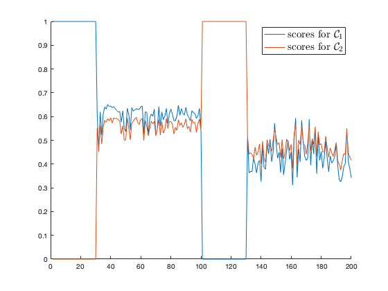
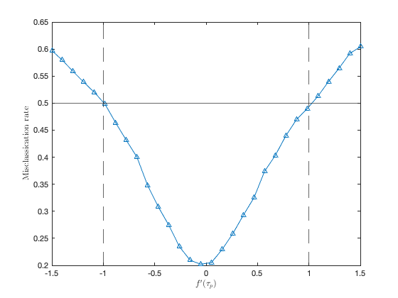

Section 4.5.2 Semi-supervised kernel learning
This page contains simulations in Section 4.5.2.
Contents
- First intuitions on Gaussian mixture
- First intuitions on MNIST data
- Data preprecessing
- Empirical classification of "classical" Laplacian approach
- Improved semi-supervised learning: theoretical misclassification rate on function of 
- Improved semi-supervised learning: empirical misclassification rate on Gaussian data
- Intra- and inter-class distance of MNIST data
First intuitions on Gaussian mixture
close all; clear; clc cs = [1/2 1/2]; k = length(cs); % nb of classes n = 200; alpha = -1; nl = 60; nu = n - nl; label_ind = zeros(nl,1); unlabel_ind = zeros(nu,1); rng(928); p = 20; means = @(i) [(-1)^i*2;zeros(p-1,1)]; covs = @(i) eye(p); S = zeros(n,k); W=zeros(p,n); for i=1:k W(:,sum(cs(1:(i-1)))*n+1:sum(cs(1:i))*n)=sqrtm(covs(i))*randn(p,cs(i)*n); S(sum(cs(1:(i-1)))*n+1:sum(cs(1:i))*n,i) = ones(cs(i)*n,1); label_ind(sum(cs(1:(i-1)))*nl+1:sum(cs(1:i))*nl) = sum(cs(1:(i-1)))*n+1:sum(cs(1:(i-1)))*n+cs(i)*nl; unlabel_ind(sum(cs(1:(i-1)))*nu+1:sum(cs(1:i))*nu) = sum(cs(1:(i-1)))*n+cs(i)*nl+1:sum(cs(1:i))*n; end X=zeros(p,n); for i=1:k X(:,sum(cs(1:(i-1)))*n+1:sum(cs(1:i))*n)=W(:,sum(cs(1:(i-1)))*n+1:sum(cs(1:i))*n)+means(i)*ones(1,cs(i)*n); end XX = X'*X; K = exp(-(-2*(XX)+diag(XX)*ones(1,n)+ones(n,1)*diag(XX)')/p/2); d = K*ones(n,1); K_ul = K(unlabel_ind, label_ind); K_uu = K(unlabel_ind, unlabel_ind); Sl = S(label_ind,:); dl = d(label_ind); du = d(unlabel_ind); hat_Su = (eye(nu) - diag(du.^(-1-alpha))*K_uu*diag(du.^alpha) )\( diag(du.^(-1-alpha))*K_ul*diag(dl.^alpha)*Sl); S(unlabel_ind,:) = hat_Su; figure hold on plot(S) legend('scores for $\mathcal C_1$', 'scores for $\mathcal C_2$', 'Interpreter', 'latex', 'FontSize', 15);

First intuitions on MNIST data
close all; clear; clc cs = [1/2 1/2]; k = length(cs); % nb of classes n = 200; alpha = -1; nl = 60; nu = n - nl; label_ind = zeros(nl,1); unlabel_ind = zeros(nu,1); init_data = loadMNISTImages('../../datasets/MNIST/train-images-idx3-ubyte'); init_labels = loadMNISTLabels('../../datasets/MNIST/train-labels-idx1-ubyte'); [labels,idx_init_labels]=sort(init_labels,'ascend'); data=init_data(:,idx_init_labels); init_n=length(data(1,:)); p=length(data(:,1)); selected_labels=[1 2]; if length(selected_labels) ~= k error('Error: selected labels and nb of classes not equal!') end
Data preprecessing
data = data/max(data(:)); mean_data=mean(data,2); norm2_data=0; for i=1:init_n norm2_data=norm2_data+1/init_n*norm(data(:,i)-mean_data)^2; end data=(data-mean_data*ones(1,size(data,2)))/sqrt(norm2_data)*sqrt(p); selected_data = cell(k,1); cascade_selected_data=[]; j=1; for i=selected_labels selected_data{j}=data(:,labels==i); cascade_selected_data = [cascade_selected_data, selected_data{j}]; j = j+1; end X=zeros(p,n); S = zeros(n,k); for i = 1:k data = selected_data{i}; %data = selected_data{i}(:,randperm(size(selected_data{i},2))); X(:,sum(cs(1:(i-1)))*n+1:sum(cs(1:i))*n)=data(:,1:n*cs(i)); S(sum(cs(1:(i-1)))*n+1:sum(cs(1:i))*n,i) = ones(cs(i)*n,1); label_ind(sum(cs(1:(i-1)))*nl+1:sum(cs(1:i))*nl) = sum(cs(1:(i-1)))*n+1:sum(cs(1:(i-1)))*n+cs(i)*nl; unlabel_ind(sum(cs(1:(i-1)))*nu+1:sum(cs(1:i))*nu) = sum(cs(1:(i-1)))*n+cs(i)*nl+1:sum(cs(1:i))*n; end XX = X'*X; K = exp(-(-2*(XX)+diag(XX)*ones(1,n)+ones(n,1)*diag(XX)')/p/2); d = K*ones(n,1); K_ll = K(label_ind, label_ind); K_lu = K(label_ind, unlabel_ind); K_ul = K(unlabel_ind, label_ind); K_uu = K(unlabel_ind, unlabel_ind); Sl = S(label_ind,:); dl = d(label_ind); du = d(unlabel_ind); hat_Su = (eye(nu) - diag(du.^(-1-alpha))*K_uu*diag(du.^alpha) )\( diag(du.^(-1-alpha))*K_ul*diag(dl.^alpha)*Sl); S(unlabel_ind,:) = hat_Su; figure hold on plot(S) legend('scores for $\mathcal C_1$', 'scores for $\mathcal C_2$', 'Interpreter', 'latex', 'FontSize', 15);
Empirical classification of "classical" Laplacian approach
close all; clear; clc cs = [1/2 1/2]; k = length(cs); % nb of classes n = 1024; p = 512; alpha = -1; nl = n/16; nu = n - nl; label_ind = zeros(nl,1); unlabel_ind = zeros(nu,1); kernel = 'poly2'; % 'gauss' or 'poly2' means = @(i) zeros(p,1); covs = @(i) (1 + (i-1)*3/sqrt(p))*eye(p); rng(928); S = zeros(n,k); W=zeros(p,n); for i=1:k W(:,sum(cs(1:(i-1)))*n+1:sum(cs(1:i))*n)=sqrtm(covs(i))*randn(p,cs(i)*n); S(sum(cs(1:(i-1)))*n+1:sum(cs(1:i))*n,i) = ones(cs(i)*n,1); label_ind(sum(cs(1:(i-1)))*nl+1:sum(cs(1:i))*nl) = sum(cs(1:(i-1)))*n+1:sum(cs(1:(i-1)))*n+cs(i)*nl; unlabel_ind(sum(cs(1:(i-1)))*nu+1:sum(cs(1:i))*nu) = sum(cs(1:(i-1)))*n+cs(i)*nl+1:sum(cs(1:i))*n; end X=zeros(p,n); for i=1:k X(:,sum(cs(1:(i-1)))*n+1:sum(cs(1:i))*n)=W(:,sum(cs(1:(i-1)))*n+1:sum(cs(1:i))*n)+means(i)*ones(1,cs(i)*n); end XX = X'*X; tau = 2*trace(cs(1)*covs(1) + cs(2)*covs(2))/p; nb_param = 30; switch kernel case 'gauss' sigma2_loop = 2.^linspace(-5,5,nb_param); param_loop = sigma2_loop; case 'poly2' fp_tau_loop = linspace(-1.5,1.5,nb_param); param_loop = fp_tau_loop; end store_error = zeros(nb_param,1); for param_index = 1:nb_param switch kernel case 'gauss' sigma2 = sigma2_loop(param_index); f = @(t) exp(-t/2/sigma2); case 'poly2' fp_tau = fp_tau_loop(param_index); derivs=[1 fp_tau 1]; coeffs=zeros(1,length(derivs)); for i=1:length(derivs) coeffs(i)=derivs(length(derivs)+1-i)/factorial(length(derivs)-i); end f = @(x) polyval(coeffs,x-tau); end K = f((-2*(XX)+diag(XX)*ones(1,n)+ones(n,1)*diag(XX)')/p); d = K*ones(n,1); K_ll = K(label_ind, label_ind); K_lu = K(label_ind, unlabel_ind); K_ul = K(unlabel_ind, label_ind); K_uu = K(unlabel_ind, unlabel_ind); Sl = S(label_ind,:); dl = d(label_ind); du = d(unlabel_ind); hat_Su = (eye(nu) - diag(du.^(-1-alpha))*K_uu*diag(du.^alpha) )\( diag(du.^(-1-alpha))*K_ul*diag(dl.^alpha)*Sl); S(unlabel_ind,:) = hat_Su; estim_vec_C1 = S(unlabel_ind,1)>S(unlabel_ind,2); estim_vec_C2 = 1 - estim_vec_C1; vec_C1 = [ones(nu*cs(1),1);zeros(nu*cs(2),1)]; vec_C2 = 1 - vec_C1; store_error(param_index) = 1- sum(estim_vec_C1.*vec_C1 + estim_vec_C2.*vec_C2)/nu; end figure switch kernel case 'gauss' semilogx(sigma2_loop,store_error, '^-'); axis([min(sigma2_loop), max(sigma2_loop), 0.25, 0.75]); xlabel('$\sigma^2$', 'Interpreter', 'latex'); ylabel('Misclassication rate', 'Interpreter', 'latex'); case 'poly2' plot(fp_tau_loop,store_error, '^-'); xlabel('$f^{\prime}(\tau_p)$', 'Interpreter', 'latex'); ylabel('Misclassication rate', 'Interpreter', 'latex'); xline(-1,'--'); xline(1,'--'); end
Improved semi-supervised learning: theoretical misclassification rate on function of
close all; clear; clc p = 100; covs = toeplitz(.1.^(0:(p-1))); Delta_mu = [2;zeros(p-1,1)]; cs = [1/2 1/2]; thetas = linspace(.05,1-eps,50); testcase = 'nu'; % nu or nl switch testcase case 'nu' nus = [800, 400, 200]; nl = 100; params = nus; case 'nl' nu = 800; nls = [400, 200, 100]; params = nls; end store_output = zeros(length(params), length(thetas)); for i = 1:length(params) switch testcase case 'nu' nu = nus(i); case 'nl' nl = nls(i); end iter = 1; options = optimset('Display','off'); for theta = thetas xi = fsolve( @(t)cs(1)*cs(2).*t*Delta_mu'*((eye(p) - t*covs)\Delta_mu) - theta, .5, options); inv_C_Delta_mu = (eye(p) - xi*covs)\Delta_mu; eta = xi^2*norm( (eye(p) - xi*covs)\covs, 'fro')^2; zeta = cs(1)*cs(2)*xi^2*inv_C_Delta_mu'*covs*inv_C_Delta_mu; E = 2*nl*theta/nu./(1-theta); V = cs(1)*cs(2)*( (2*nl+E*nu)^2*zeta + (4*nl + E^2*nu)*eta )/( nu*(nu-eta) ); store_output(i,iter) = cs(1)*qfunc((1-cs(1))*E/sqrt(V)) + cs(2)*qfunc((1-cs(2))*E/sqrt(V)); iter = iter + 1; end end [max1,ind1] = min(store_output(1,:)); [max2,ind2] = min(store_output(2,:)); [max3,ind3] = min(store_output(3,:)); figure hold on p1 = plot(thetas, store_output(1,:),'b'); p2 = plot(thetas, store_output(2,:),'r--'); p3 = plot(thetas, store_output(3,:),'g-.'); plot(thetas(ind1), max1, 'bo'); plot(thetas(ind2), max2, 'ro'); plot(thetas(ind3), max3, 'go'); switch testcase case 'nu' legend([p1 p2 p3], '$n_{[u]} = 800$', '$n_{[u]} = 400$', '$n_{[u]} = 200$', 'Interpreter', 'latex', 'Fontsize', 14, 'Location', 'northwest') case 'nl' legend([p1 p2 p3], '$n_{[l]} = 400$', '$n_{[l]} = 200$', '$n_{[l]} = 100$', 'Interpreter', 'latex', 'Fontsize', 14, 'Location', 'northeast') end xlabel( '$\theta$', 'Interpreter', 'latex'); ylabel( 'Misclassicaiton rate', 'Interpreter', 'latex');

Improved semi-supervised learning: empirical misclassification rate on Gaussian data
close all; clear; clc cs = [1/2 1/2]; k = length(cs); % nb of classes p = 100; nl = 200; means = @(a) (-1)^a*[1;zeros(p-1,1)]; covs = @(a) eye(p); P = @(n) eye(n) - ones(n)/n; nu_loop = 100:100:1000; store_error = zeros(length(nu_loop),3); iter = 1; nb_average_loop = 50; rng(928); for nu = nu_loop n = nl + nu; label_ind = zeros(nl,1); unlabel_ind = zeros(nu,1); vec_C1 = [ones(nu*cs(1),1);zeros(nu*cs(2),1)]; vec_C2 = 1 - vec_C1; vec_C = -vec_C1 + vec_C2; store_error_tmp = zeros(nb_average_loop,3); for average_index = 1:nb_average_loop S = zeros(n,k); W=zeros(p,n); for i=1:k W(:,sum(cs(1:(i-1)))*n+1:sum(cs(1:i))*n)=sqrtm(covs(i))*randn(p,cs(i)*n); S(sum(cs(1:(i-1)))*n+1:sum(cs(1:i))*n,i) = ones(cs(i)*n,1); label_ind(sum(cs(1:(i-1)))*nl+1:sum(cs(1:i))*nl) = sum(cs(1:(i-1)))*n+1:sum(cs(1:(i-1)))*n+cs(i)*nl; unlabel_ind(sum(cs(1:(i-1)))*nu+1:sum(cs(1:i))*nu) = sum(cs(1:(i-1)))*n+cs(i)*nl+1:sum(cs(1:i))*n; end X=zeros(p,n); for i=1:k X(:,sum(cs(1:(i-1)))*n+1:sum(cs(1:i))*n)=W(:,sum(cs(1:(i-1)))*n+1:sum(cs(1:i))*n)+means(i)*ones(1,cs(i)*n); end XX = X'*X; f = @(t) exp(-t/2); K = f((-2*(XX)+diag(XX)*ones(1,n)+ones(n,1)*diag(XX)')/p); % RMT-improved hat_K = P(n)*K*P(n); hat_K_ll = hat_K(label_ind, label_ind); hat_K_lu = hat_K(label_ind, unlabel_ind); hat_K_ul = hat_K(unlabel_ind, label_ind); hat_K_uu = hat_K(unlabel_ind, unlabel_ind); hat_Sl = P(nl)*S(label_ind,:); alpha = norm(hat_K_uu)+1; hat_Su = ((alpha*eye(nu) - hat_K_uu )\hat_K_ul)*hat_Sl; S(unlabel_ind,:) = hat_Su; estim_vec_C1 = S(unlabel_ind,1)>S(unlabel_ind,2); estim_vec_C2 = 1 - estim_vec_C1; store_error_tmp(average_index,1) = 1- sum(estim_vec_C1.*vec_C1 + estim_vec_C2.*vec_C2)/nu; % classical Laplacian alpha = -1; d = K*ones(n,1); K_ll = K(label_ind, label_ind); K_lu = K(label_ind, unlabel_ind); K_ul = K(unlabel_ind, label_ind); K_uu = K(unlabel_ind, unlabel_ind); Sl = S(label_ind,:); dl = d(label_ind); du = d(unlabel_ind); hat_Su = (eye(nu) - diag(du.^(-1-alpha))*K_uu*diag(du.^alpha) )\( diag(du.^(-1-alpha))*K_ul*diag(dl.^alpha)*Sl); S(unlabel_ind,:) = hat_Su; estim_vec_C1 = S(unlabel_ind,1)>S(unlabel_ind,2); estim_vec_C2 = 1 - estim_vec_C1; store_error_tmp(average_index,2) = 1- sum(estim_vec_C1.*vec_C1 + estim_vec_C2.*vec_C2)/nu; % kernel spectral clustering [v,~] = eigs(P(nu)*K_uu*P(nu), 1, 'largestreal'); if v'*vec_C < 0 v = -v; end store_error_tmp(average_index,3) = 1- sum(sign(v)==vec_C)/nu; end store_error(iter,1) = mean(store_error_tmp(:,1)); store_error(iter,2) = mean(store_error_tmp(:,2)); store_error(iter,3) = mean(store_error_tmp(:,3)); iter = iter + 1; end figure hold on plot(nu_loop,store_error(:,1), 'r*-') plot(nu_loop,store_error(:,2),'b*-') plot(nu_loop,store_error(:,3),'g*-') legend('RMT improved', 'Classical Laplacian', 'Spectral Clustering', 'Interpreter', 'latex', 'Fontsize', 15)

Intra- and inter-class distance of MNIST data
close all; clear; clc cs = [1/2 1/2]; k = length(cs); % nb of classes n = 4000; selected_labels=[8 9]; noise_level_dB=3; init_data = loadMNISTImages('../../datasets/MNIST/train-images-idx3-ubyte'); init_labels = loadMNISTLabels('../../datasets/MNIST/train-labels-idx1-ubyte'); [labels,idx_init_labels]=sort(init_labels,'ascend'); data=init_data(:,idx_init_labels); init_n=length(data(1,:)); p=length(data(:,1)); if length(selected_labels) ~= k error('Error: selected labels and nb of classes not equal!') end % Data preprecessing data = data/max(data(:)); mean_data=mean(data,2); norm2_data=0; for i=1:init_n norm2_data=norm2_data+1/init_n*norm(data(:,i)-mean_data)^2; end data=(data-mean_data*ones(1,size(data,2)))/sqrt(norm2_data)*sqrt(p); % Add Gaussian noise to data noise_level=10^(noise_level_dB/10); Noise = rand(p,init_n)*sqrt(12)*sqrt(noise_level*var(data(:))); snr(data,Noise) data=data+Noise; selected_data = cell(k,1); cascade_selected_data=[]; j=1; for i=selected_labels selected_data{j}=data(:,labels==i); j = j+1; end X=zeros(p,n); S = zeros(n,k); for i = 1:k data = selected_data{i}; %data = selected_data{i}(:,randperm(size(selected_data{i},2))); X(:,sum(cs(1:(i-1)))*n+1:sum(cs(1:i))*n)=data(:,1:n*cs(i)); end XX = X'*X; Dist = (-2*(XX)+diag(XX)*ones(1,n)+ones(n,1)*diag(XX)')/p; Dist_intra = [Dist(1:n*cs(1),1:n*cs(1)), Dist(n*cs(1)+1:n,n*cs(1)+1:n)]; Dist_inter = [Dist(1:n*cs(1),n*cs(1)+1:n), Dist(n*cs(1)+1:n,1:n*cs(1))]; mean_Dist = mean([Dist_inter(:); Dist_intra(:)]); figure hold on histogram(Dist_intra(:)/mean_Dist, 30, 'Normalization', 'pdf', 'EdgeColor', 'w') histogram(Dist_inter(:)/mean_Dist, 30, 'Normalization', 'pdf', 'EdgeColor', 'w') legend('intra-class', 'inter-class', 'Interpreter', 'latex', 'FontSize', 15);
ans = -9.0201